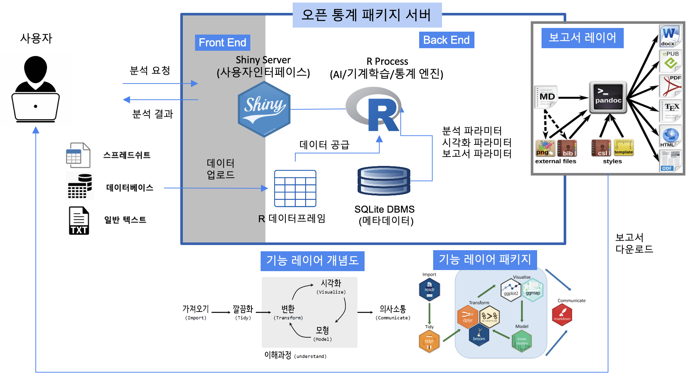

빛스탯2 — 차세대 오픈 통계 학습 플랫폼
webR·WebAssembly 기반으로 설치 없이 브라우저에서 실행되는 오픈 통계 학습 플랫폼입니다. 구 BitStat의 진화형으로, 목적에 맞춘 세 가지 학습 트랙을 제공합니다.
앱 트랙
슬라이더·클릭으로 직관적으로 체험하는 통계. (Shiny × shinylive) — 바로가기
코드 트랙
편집형 R 코드 실행과 자동 채점. (Quarto Live × webR) — 바로가기
고교 트랙 · 빛스탯 HS
2022 개정 교육과정 순서로 배우는 고교 통계. (Shiny for Python × Pyodide) — 바로가기
개발 중인 도구
한국 R 사용자회가 새롭게 개발하고 있는 도구입니다.
빛워드프로세서 (BitWriter)
인공지능과 함께 쓰는 AI 글쓰기 워드프로세서를 개발하고 있습니다. (비공개 개발 중)
빛한글 (BitHangul)
한글 처리를 지원하는 도구를 개발하고 있습니다. (비공개 개발 중)
오픈 통계 패키지
컴퓨터나 데이터 작업이 처음인 국민 누구나 쉽게 통계 패키지를 접할 수 있도록, 그리고 데이터 프로그래밍 역량을 수준별로 키울 수 있도록 돕는 것이 목표입니다. 이를 위해 새로운 형태의 블록 통계 분석을 포함한 오픈 통계 패키지 개발을 이어가고 있습니다.
프로젝트 개요
코로나19로 심화된 디지털 불평등과 디지털 전환(Digital Transformation) 속에서, 데이터 리터러시(Data Literacy)는 시민의 필수 역량이 되었습니다.
이러한 배경에서 통계 대중화를 위해 오픈 통계 패키지 — 빛스탯(BitStat) — 을 개발하게 되었습니다.
데이터 리터러시 역량은 결국 디지털 불평등과 맞닿아 있으며, 나아가 교육·취업·소득·자산 불평등으로 이어져 사회 양극화를 심화시키는 주범으로 지목되고 있습니다.
기대 효과
기술적 측면
기하급수적으로 늘어나는 데이터를 따라잡을 혁신 기술이 필요합니다. 다분야에 활용 가능한 Auto-X 기술을 기반으로 통계 분석의 생산성과 품질을 크게 높입니다.
경제·산업적 측면
’22년 글로벌 빅데이터·분석 시장은 전년 대비 27% 성장한 2,740억 달러 규모로 전망되었습니다. 공개SW로 개방해 중소기업·스타트업의 신규 부가가치 창출을 지원합니다.
IDC, “Revenue from big data and business analytics worldwide from 2015 to 2022”, 2021.9
사회적 측면
데이터3법·공공데이터 확대로 데이터 경제가 커지며 리터러시 격차도 벌어집니다. 오픈 통계 패키지를 SW·서비스로 제공해 사회 통합과 통계 대중화에 기여합니다.
BitStat 아키텍처
통계 비전공자와 일반인도 쉽게 쓸 수 있도록, 데이터를 입력하면 이를 인식해 통계 분석을 수행하고 산출물을 자동 생성하는 오픈소스 기반 클라우드 통계 패키지입니다.

BitStat 시연
BitStat 통계 패키지는 지속적으로 개발을 이어가고 있으며, 개발 버전을 꾸준히 업그레이드하고 있습니다.